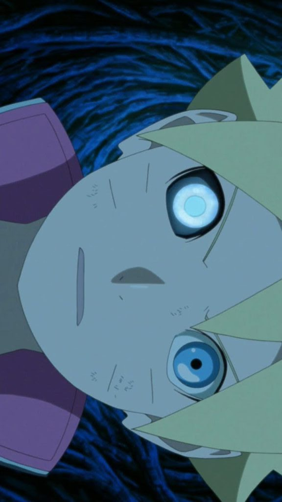
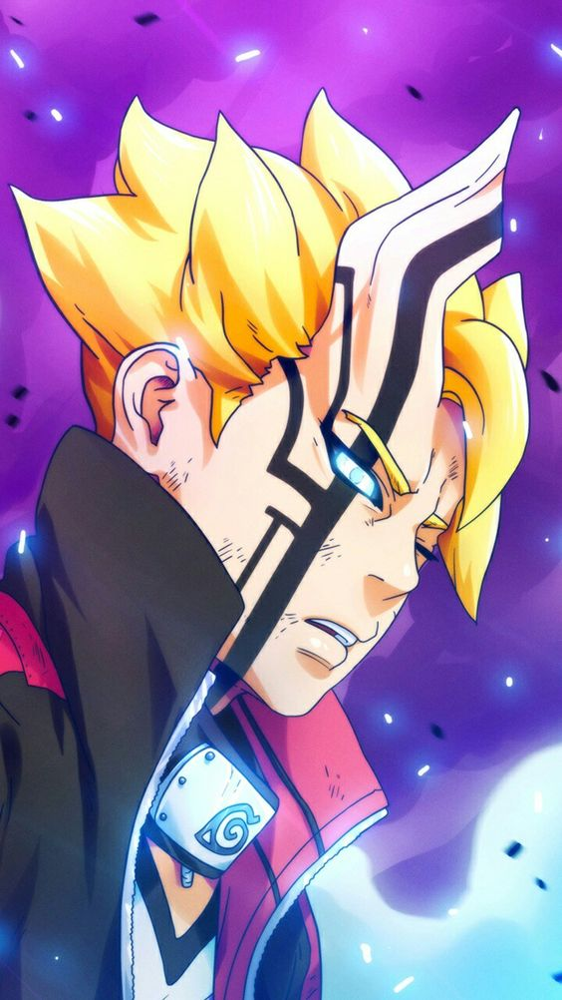
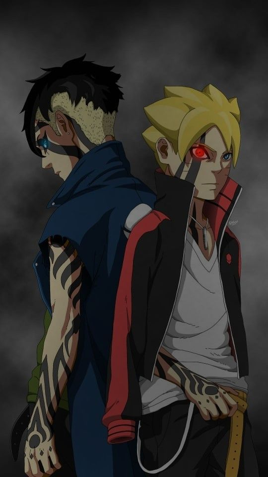

-
JOGAN
É um dojutsu único que foi herdado do clã extraterreste Otsutsuki e eventualmente despertado no seu olho direito.
Boruto Uzumaki
-
KARMA
Este selo é um canal para que um Otsutsuki consiga marcar o corpo de possíveis receptáculos que ajudarão os alienígenas a ressuscitar.
Boruto Uzumaki
-
RECEPTÁCULO
O Karma de Boruto consegue ser ativado devido a ressonância causada pelo uso do Karma de Kawaki. Os portadores do Karma são conhecidos como "receptáculo".
Kawaki e Boruto